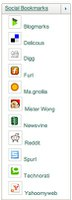

Blog
seantis kultur :: ArKwAy
Im Sinne eines Kulturengagements bietet seantis jungen Kulturschaffenden Platz im Web. Das Projekt "ArKwAy" sucht nach neuen Konzepten und Entwicklungsmöglichkeit für den urbanen Raum der Metropole London.
"ArKwAy is a new development in the Thames Gateway to meet London's need for more urban space. Along the river Thames, London can grow east wards."
Stellt sich natürlich gleich die Frage ob's in Downtown Switzerland (Zürich) nicht auch frische Ideen für eine etwas innovativere Stadtentwicklung braucht...
Skype auf der Überholspur
Skype scheint sich unter den VoIP-Anbietern durchzusetzen. So bietet beispielsweise das elektronische Schweizer Telefonbuch "Directories" (Weisseseiten) seit neustem bei den gefundenen Telefonnummern eine direkte Skype-Anbindung. Mit einem Klick auf die entsprechende Nummer wird eine Verbindung über Skype hergestellt. Dass es sich bei der Telefonbuchherausgeberin Directories um eine Swisscom-Tochterfirma handelt ist sicher auch nicht ganz uninteressant...
Social Bookmarks
Die "Social Bookmarks" (zu deutsch "Soziale Lesezeichen") scheinen der nächste Schritt zur Personalisierung des Internets zu sein. Das Motto lautet: Lieblingsseiten mit Lieblingsmenschen teilen. Schöne neue Web 2.0-Welt...

SPIEGEL Wissen
Mit "SPIEGEL Wissen" stellt das Haus Spiegel ein neues Projekt ins Netz. Die Seite liefert Resultate aus verschiedenen Quellen.
Informationslieferanten sind dabei ein online Lexikon, ein Deutsches Wörterbuch, Wikipedia und natürlich das umfangreiche SPIEGEL-Archiv.
SuisseID: Huhn und Ei
Mit der zunehmenden Verbreitung von Online-Applikationen wird ein elektronischer Identitätsnachweis und damit verbunden eine rechtsgültige elektronische Signatur sowie ein sicheres Login immer wichtiger.
Ab Montag kann die SuisseID bei Quo Vadis (https ://suisseid-shop.ch) oder SwissSign (http://swisssign.com) bestellt werden.
Um den viel zitierten "Huhn-Ei-Effekt" (Endkunden kaufen keine elektronischen IDs, weil es keine Anwendungen dafür gibt und Anbieter programmieren keine Anwendungen dafür, weil die Kunden die ID nicht haben) zu überwinden werden im Rahmen des Konjunkturprogramms nun einerseits Pilotprojekte gefördert und andererseits Endkunden mit einem Cashback ein Teil der Kosten zurückerstattet.
seantis entwickelt zur Zeit zusammen mit AVIONIS GmbH eine Anbindung der SuisseID an das Online-Flugbuch Flight Log.